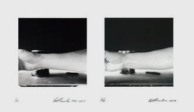
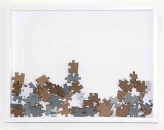
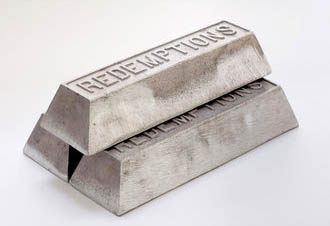
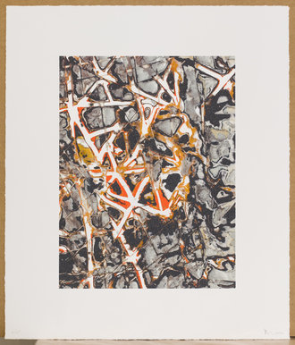

$-$ Buy Limited Editions . . .
All proceeds for the sale of editions go directly toward the support of Wattis exhibitions, programs, and research. We are pleased to present Wattis Collectibles, a program of limited edition works. This series, conceived in conjunction with the Wattis exhibition and residency program, affords an opportunity to own works by some of today's most internationally significant emerging and established artists.
For the Fall of 2012, artists who have historic ties to the institution were asked to create new works to support the Wattis' transition into a new location. Seminal artists John Baldessari, Mark Bradford, Jonathan Monk, Paulina Olowska, and Laura Owens, have created new works exclusively for the Wattis, available on a first come first serve basis.
For direct sales, additional information or to be added to the Wattis Collectibles mailing list, please contact Micki Meng at mmeng@cca.edu or 415.703.9521. Proceeds directly support the ongoing realization of the Wattis' exhibition program.

Ed Ruscha

Ryan Gander

Claire Fontaine

Mark Bradford
Order now here: